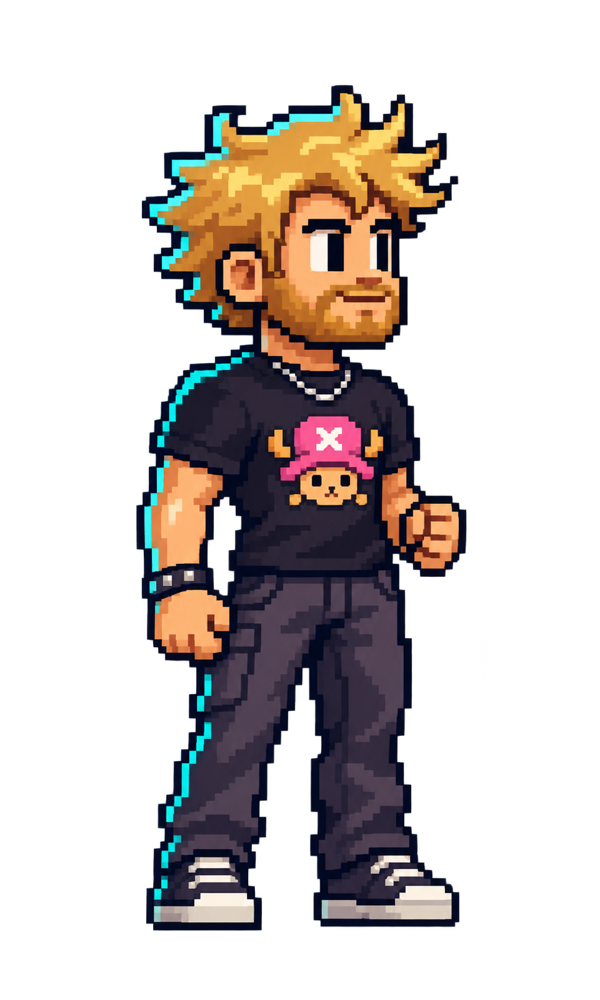
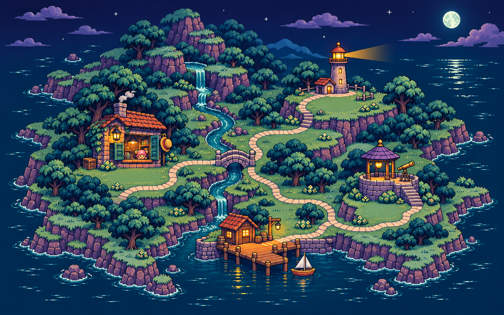

01 / PLAYER PROFILE
Meet your player.
Every adventure starts with a few good tools.

QUINTIN VIZZASoftware engineer · Creative builder
THE ENGINEER BEHIND THE SPRITE
I build things you can use.
And sometimes play.
I'm a Computer Engineering graduate from Sacred Heart University, with a Mathematics minor and production software experience at Sentari AI.
From full-stack products to a full-scale pinball machine, I like connecting software, data, and the physical world.
Pick a tool to see what I build with it.
Choose your gear. Explore my work.Skip to map
02 / WORLD MAP
Pick a destination.
A little exploration. A lot of real work.
